内容要点
《硅谷101》用约一小时，沿硬件与软件双线重述特斯拉 FSD 十三年：舆论与诉讼伴生的进步、与 Mobileye 决裂后的自研芯片（AI3/AI4）、感知模块四次升级、去毫米波雷达与占据网络、HW4 研发中的摄像头/芯片数量拉扯，再到 ChatGPT 时刻催熟的端到端 V12–V14、奥斯汀 Robotaxi/Cybercab 体验，以及 AI5 研发中的瞒报风波。访谈特斯拉十余年工程师与现场乘坐；结论是路线之争未完，下半场更名为「经济之战」。繁体口播 ASR 已转述为简体，专名按通行写法。
ASR 校正：Cybercab/Robotaxi；Mobileye；HW2/HW3/HW4；占据网络 Occupancy Network；端到端；Karpathy/Ashok Elluswamy 等按通行拼写；「伊朗」→马斯克；斗九/Dojo 项目口播保留语境。
知识结构
Waymo L4 vs 特斯拉渐进；Mobileye 黑盒→自研算法与双芯片萌芽。
AI3 高利用率；成本逼供；HydraNet/时序/多摄融合。
占据网络+自动标注；摄像头像素/布局与双芯片拍板；GDDR 带宽瓶颈。
V12 验证存活，V13 修剪，V14 加肥；车队扩展成监管游戏。
流片瞒报、台积电/三星双线；与 Waymo 比的是单位经济与规模。
特斯拉把未成熟系统交给真实车队迭代；技术债用自研与端到端硬扛，最终胜负看单位经济与监管扩展速度。
00:00-09:30Cybercab 开场与 Mobileye 时代
开场无方向盘车辆与「丑闻诉讼质疑伴生进步」的总述；团队访谈十余年工程师并赴奥斯汀体验。车内无方向盘无踏板，运营阶段靠远程人员兜底；德州登记 Robotaxi 车队口播给出数百辆量级（含 Cybercab）。
回忆与谷歌分道：谷歌主张一步 L4，马斯克主张先 L2 再迭代。早期 Autopilot HW1.0 绑 Mobileye，传感器与算力极简；接口黑盒导致合作不畅，事故成为催化，特斯拉转向自研算法并过渡到英伟达方案的 HW2/2.5，引出双芯片冗余思路。
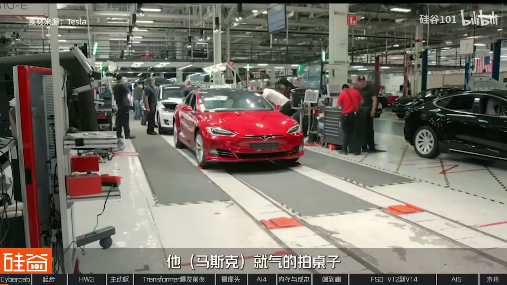
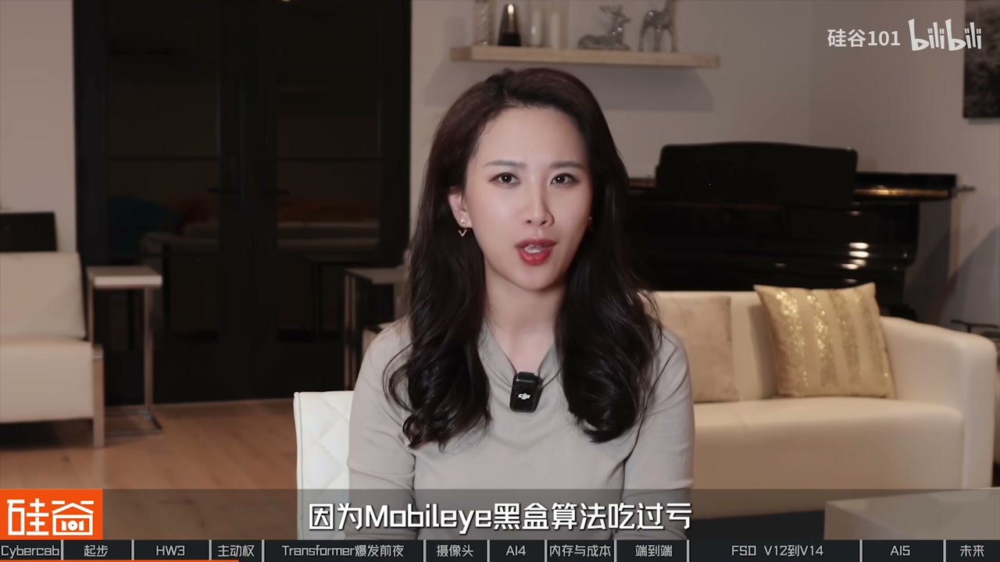
09:30-23:00AI3、成本战与感知四大升级
自研 AI3（HW3）约 18 个月设计、首次流片基本成功；相对通用 GPU，定制芯片跑网络有效利用率可到约 80%。主动权带来成本优势：采购侧用「不换方案就全面降价」表逼 TI，口播称一年可省约两千万美金量级；也吐槽供应商驱动三行代码扯皮半个月。
Karpathy 阶段用神经网络重做感知：多任务 HydraNet 共享 backbone；从单帧图像走向视频时序；多摄像头融合到统一坐标系的 2.5D/BEV。到 2021 感知真正「读懂」道路环境时，马斯克突然推动去毫米波雷达——疫情下供应商不配合是现实催化，软件团队被迫用纯视觉补速度估计。
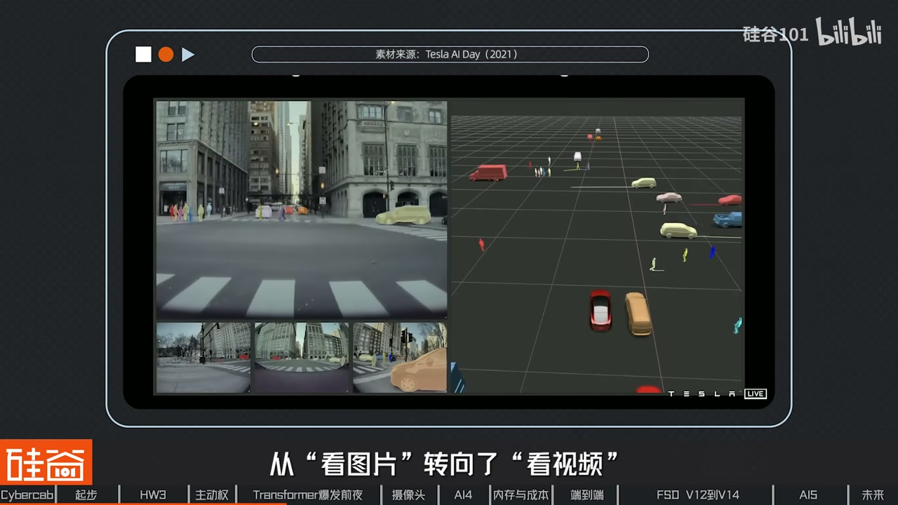
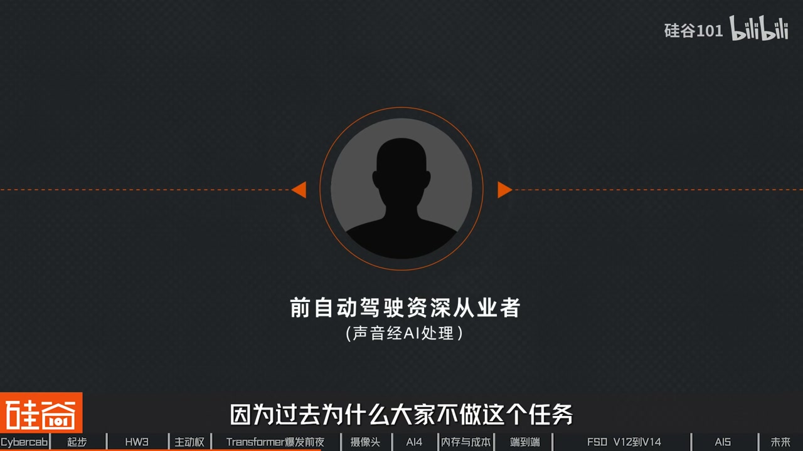
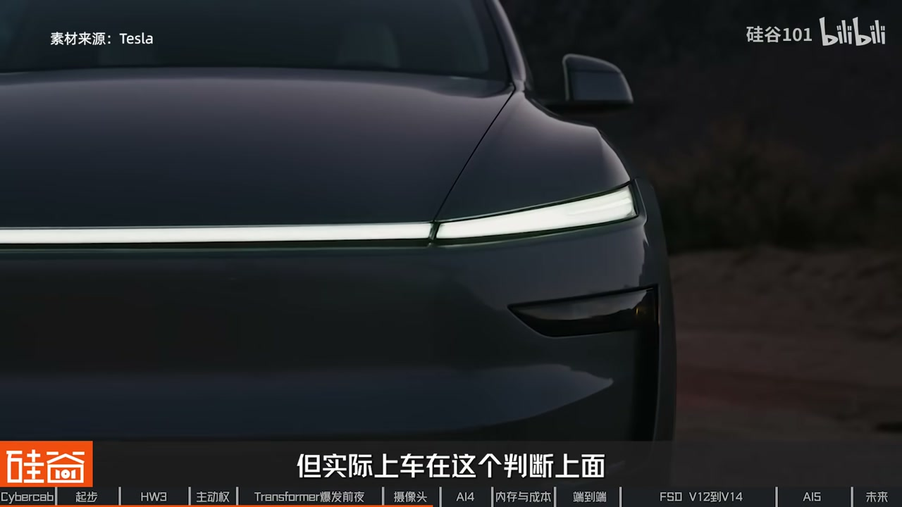
23:00-38:00占据网络与 HW4 反复拉扯
Occupancy Network 用体素表达障碍，避免矩形框对异形物体的损失；量产车无激光雷达，靠自动标注与少量装激光雷达的采集车生成 Ground Truth。算力吃紧推动 HW4：摄像头升到约 500 万像素更看重帧率与车规，而非堆手机式亿像素；前挡三摄被砍引发盲区争论，马斯克第一性原理「人只有两只眼」拍桌定调，后又快速纠偏。
芯片数量：软件要三颗、财务嫌贵，最终强制双芯片并改板赶量产。AI4 与三星协作延期、改用 GDDR 追带宽却容量/车规生态不足，内部已有改 LPDDR 换容量的 HW4.3 方向。自研芯片还进服务器平摊成本。Karpathy 离职后股价波动，但端到端暗线已在酝酿。
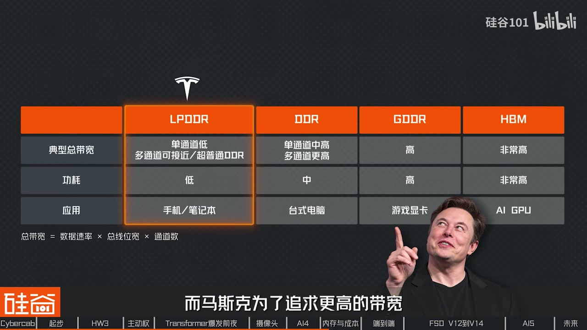
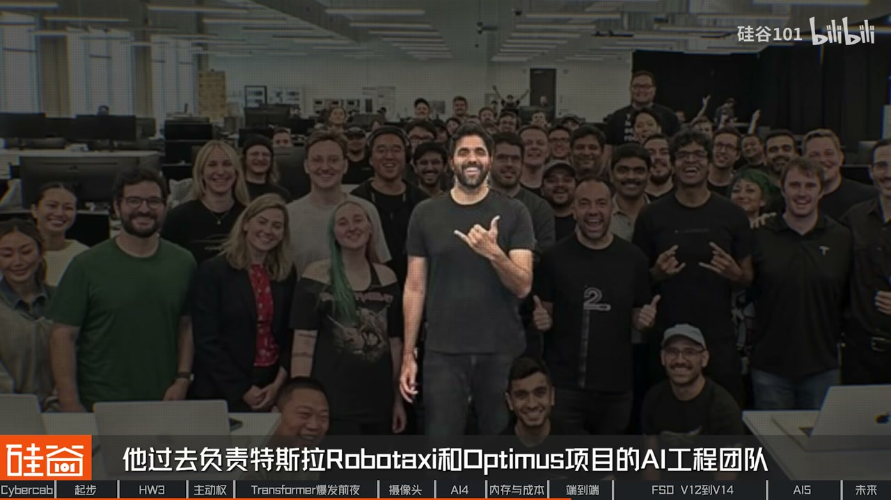
38:00-52:30端到端 V12–V14 与 Robotaxi
ChatGPT 时刻加速「车用 ChatGPT」叙事：用神经网络替代海量规则，代码从约三十万行量级压到约两千行叙事。2023 年底内测、2024 初向车主推送 FSD V12；BEV 显示来自旁路 head，不参与控制。V13 被比作「清理枝叶」提升效率；V14.1 参数大幅提升、强化学习与编译器重写，「继续施肥让树长高」；出现跨州长距离少干预路测宣传。
可解释性：训练中输出 3D 表征检查模型看什么；车端筛选器只上传高价值片段；世界模型仿真挑战算力与真实性。Robotaxi 软件更新更勤并加远程监管；扩展瓶颈转向各地许可与安全人工比例——「已不是纯科技问题」。
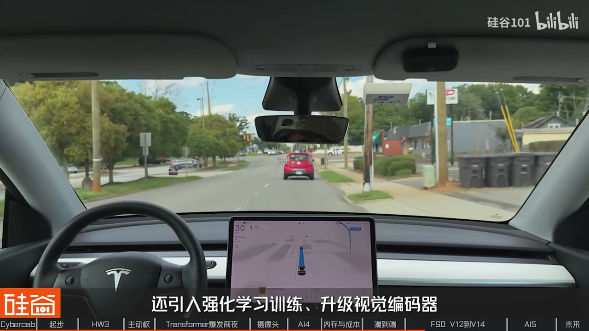
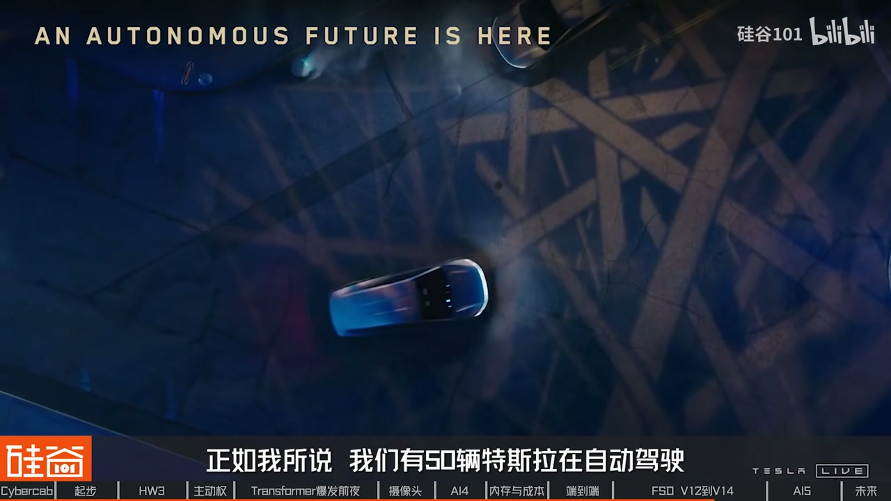
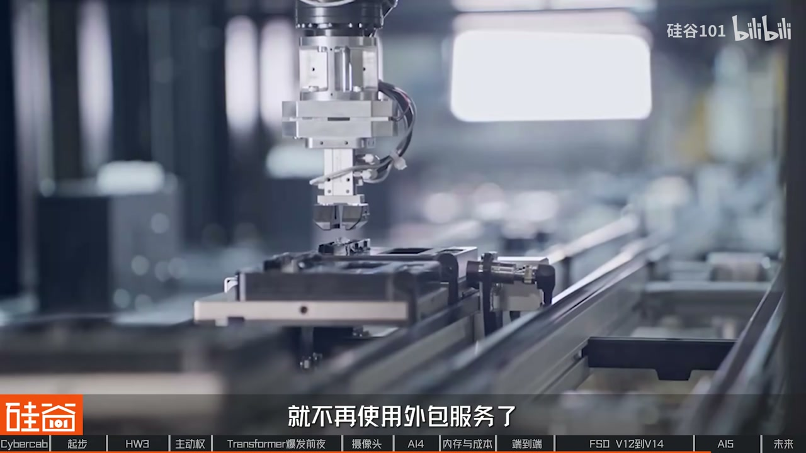
52:30-61:23AI5 风波与经济之战
Dojo 训练集群口播中的叫停与「AI5/AI6 可兼训练」解释，引发外界对训练能力的疑虑。AI5 研发进度被瞒报，图纸交台积电后发现远未到可流片，马斯克震怒裁撤相关领导；Kerry 视角下其老板或有连带责任。此后双线：台积电版与找回三星版，或同车混用不同代工厂芯片、用户无感；亦有「AI5 不一定上车」的内部传言。
收束对比 13 年前分叉：Waymo 谨慎贵传感器小范围扩张，特斯拉摄像头进数百万量产车在争议中迭代。如今商业化 Waymo 仍明显领先，Cybercab 刚在有限区域跑，监管调查仍在。战争改名「经济之战」——单位经济与扩展速度；口播提到更大参数的后续版本意在支撑更高等级无人驾驶，但仍是进行时。
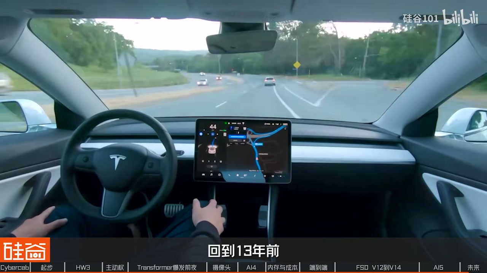
完整转录（1099段）
以下文本由 Whisper 自动转录，可能存在识别误差；正文已按语境校正专有名词。
正在行�的是一輛沒有方向盤的車
FSD的發展故事一路上是伴隨著各種的醜聞訴訟和質疑
這樣的輿論伴隨了特斯拉FSD十幾年
所幸FSD一直沒有停止進步
但是進步是艱難的
在馬斯克這個摳門老闆的帶領下
特斯拉自動駕駛的硬件研發總是反復拉扯
多次推倒重來
直到上線前還在加班修改
他就氣得拍桌子
然後就開始Fword了
從供應商的決裂
自言芯片的豪賭
甚至團隊一度出現了瞞報與欺騙
伊朗一聽這個事就知道
你們這幫做芯片的人明顯就是胡誘我
然後伊朗就發了很多人
與此同時軟件團隊永遠抱怨著算力不夠用人員不足
卻在極致的成本控制中倒逼出了極致的技術路線
你給我10倍我都能把你用掉
我們志祺視頻的寫稿采訪和製作橫跨了幾個月的時間
我們對談了在特斯拉工作十餘年的工程師
也去到現場體驗了特斯拉的無人駕駛車
這個視頻我們從硬件和軟件兩條線
詳細的拆解一下特斯拉FSD的進化史
大家不要忘了關注我們的頻道
也記得給我們點個贊
接下來就讓我們進入FSD的世界
今天是美國時間9月23號
我們從矽谷飛到了德州的奧斯汀
也開過Model 3
但是很明顯整個車比Model Y要縮水了一大圈
甚至我覺得比Model 3都還要小
我們坐進來之後發現它只有兩個人的座位
我坐在本來該是駕� pagar位置的左側
但這邊它沒有方向盤
也沒有腳踏板
沒有加速板
說實話心裡面還是有一點小忐忑的
但是我知道在目前的運營階段
特斯拉有啟動安全機制
由於CyberCap採用了無方向盤
和無煞車踏板的原生無人車設計
車內乘客在遇到緊急情況時
為了保證安全
特斯拉在後台配備了遠程工作人員來進行兜底
截止今年9月22號
特斯拉在美國德州登記的自動駕駛車隊Robotaxi總數
增加到了476輛
除了67輛的CyberCap之外
不符合馬斯克的第一性原理
同時谷歌主張一步到位直接坐L4
而馬斯克認為應該先推出L2再迭代到L4
ayan此雙方分道揚鑣
也讓自動駕駛誕生出了兩條路線並且爭論至今
可是特斯拉當時的狀態
別說自演了
連活下去都費勁
最現實的路徑就是先找個現成的供應商
於是他們選擇了Moboy
2014年11月
特斯拉發布了Autopilot Hardware 1.0
全車的硬件非常基礎
只有一個前置攝像頭
一個前置毫米波雷達
再加12個超聲波傳感器
芯片為Moboy IQ3 500mHz頻率
256MB的內存
放在如今肯定是不夠看的
因為在早期車規的技� whis上
它的侷限性非常的大
一個不得不採用的方案
因為你沒有別的選擇
這是Kerri Liu
她在特斯拉工作了近12年
參與了能源自動駕駛機器人等
在這次事故是成了雙方徹底彈崩的催化劑
為什麼只是催化劑呢
那這裡我們先來說說特斯拉
特斯拉在特斯拉的車上
有一個很重要的原因
就是特斯拉的車子
它是一台Moboy I的
特斯拉的車子
它是一台Moboy I的
特斯拉的車子
特斯拉的車子是一台Moboy I的
特斯拉的車子是一台Moboy I的
特斯拉的車子是一台Moboy I的
特斯拉的車子是一台Moboy I的
特斯拉的車子是一台Moboy I的
當然這個可能
然後這個接口之下
Moboy I的內容肯定是黑盒
不提供給特斯拉
這點其實就非常討厭特斯拉開發
因為有時候你想跨越這個接口
會更改這個接口
但你沒有這個控制權
所以真正讓特斯拉和Moboy I分手的原因
是因為 saves 合作不暢
此後特斯拉開始一手獨攬算法部分
硬件系統也有了新的合作商
但是市場卻不買賬了
2016年10月
距離事故僅5個月
特斯拉發布了Hardware 2.0
這次傳
因為Hardware 2.0是特斯拉第一次用英偉達的方案
當時英偉達也並沒有專門針對輔助駕駛做芯片
所以在結構上就是一個SoC
再外掛一個GPU
但問題是馬斯克當時已經在推全自動駕駛了
得考慮一個很現實的問題
萬一芯片壞了怎麼辦
你得有備用方案吧
所以特斯拉就不再用了
所以特斯拉就不再用了
所以特斯拉就不再用了
那特斯拉就不再用了
所以特斯拉就不再用了
所以特斯拉就不再用了
所以特斯拉就不再用了
你得有備用方案吧
所以到了2.5
特斯拉多加了一個GPU作為手續
這就是特斯拉FSD雙芯片架構的出行
與此同時特斯拉也在6個月內
通過自研替代了Mobileye的算法部分
還新推出了FSD
意味著和以前大不一樣
但是初期表現卻沒有與其中那樣的順利
Mobileye已經做了那麼多年
迭代下來就算它技術比較弱厚
肯定也還是各方面比較完善一些
一類新的團隊從0到1開始做
反開始有各種問題
在新團隊的幫助下
第一款F Clover芯片也就是AI3
只花了18個月就設計出來了
並Regular芯片的成功
並且在2017年12月首次流片成功
整個過程非常順利
當時甚至第一次流片出來
這個芯 citizens就基本上已經沒有毛病了
最後只是稍微小改了一下
然後做了第二版
然後就量差
後面就再沒改過了
所以Halbert3算是一個非常成功的芯片
因為你要知道做處理器這種芯片
你無論放在Intel、AMD
不管哪家公司一次流片能夠做好的
和之前通用芯片架構完全不同
芯片算力不能光看紙面上的參數
像英偉達的芯片因為是通用的
裡面會包含線程調度、密存訪問
分支預測等等任務
在執行實際網絡任務的時候
實際利用率很難跑上去
而特斯拉定制的芯片
專為實際任務場景做了優化
有效利用率能夠達到80%
相比通用芯片是提升了50%之多
先別朝.
Halbert3芯片的開发
用上了字眼芯片之後
主要帶來了兩個好處
也就是成本優勢和主動權
這背後還有兩個與供應商之間的周旋與衝突
先來說說第一個
眾所周知
馬斯克一直都非常在意成本
而Kerry一項很重要的工作
就是通過各種手段逼迫供應商降價
TI是車規芯片的一個非常大的供應商
當時在18年在我們整個車上
其實是每年是要用大量的TI的芯片
那時候18年年底的時候都差點破產
所以當時成本的壓力其實非常大
當時公司提出了就是說
換了之後TI沒有想到
這一套芯片對他們講非常重要
因為占了很大的一部分的營收額
他們直接就開始求我們
然後又找我老闆
就他們的CEO也都跑過來說
能不能別換
能不能有什麼別的方法
然後當時採購部門直接就把降價表格
給他們發過去說
你只要把這個上面的所有芯片通通降價
我們就改好了
然後TI跟我們僵持了大概好幾個禮拜
然後最後就同意了
當年的時候一年可以省大概2000萬美金
對於馬斯克來講
實際上是一個非常大的成本的下降
他當時還各地發信給我們感謝我們
其實到今天為止你都可以看到
.
他們芯片有溫度感應器
然後我們就說能不能把溫度能夠給我們顯示一下
其實這個事情很簡單
寫一個很簡單的幾行代碼的事情
就是寫個驅動
因為他跟我們來來回回扯皮扯
光扯皮就扯了差不多一個�
然後除了付費還要再等一個禮拜
這三行代碼就能搞定的事情
已經蒸了快半個月了
就這樣的一個合作模式
基本上就很難往下推進
他也有他們別的核心的產品
在車載這一塊在當年真的是很難做
效率非常的低
好講完這些小故事
我們再回到Hardware 3.0硬件上
他有一個很大的問題
就是雖然在2016年設計的時候
這為當時常用的捲機神奇網絡CNN做了優化
但是誰都沒有想到一年之後
也就是2017年出現了一篇
改變整個AI史的論文
在堅持到Android的能 underestimate
馬斯克決定邀請他加入特斯拉
並且直接向自己彙報
CAPAFI的加入不僅為特斯拉帶來了技術上的創新
更重要的是當時特斯拉的自動駕駛正處於低谷
急需一位領頭人來吸引更多的人才
隨後特斯拉在2018年到2021年間
對算法部分的感知模塊進行了一次次升級
那麼接下來我們盡量用通俗的語言來講講
還記得自動駕駛的三大模塊嗎
也就是感知規劃和執行
相關的基礎知識我們在之前的視頻當中有詳細的介紹
感興趣的小夥伴們可以回看一下
而CAPAFI加入的第一件事就是用神經網絡重構感知模塊
他提出將車道線檢測、車輛識別、行人感知這些基礎任務
都交給深度學習模型
通過含量數據訓練讓系統自己識別環境
這樣面對從機器的電力和電力的電力
這又帶來了另外一個問題
你看系統它又要識別車輛行人
還要看懂紅綠燈、追桶、減速載、施工標誌等等
如果每一個任務都要跑一個獨立的神經網 recount
不僅代碼量會非常大
車載的算力也不夠用
那這就要說到第二個升級點了
就是Hydranet架構
它的設計思路是讓所有任務共用一個底子
讓所有任務都能夠進入一個新的系統
它的設計思路是讓所有任務
共用一個底層的特徵提取網絡 backbone
只在最頂端分拆出不同的任務頭也就是 head
這樣多個攝像頭多個識別任務
都能共享同一個算力底座
就像一棵樹
樹幹是共享的算力底座
樹枝是不同的識別任務
各長各的葉子
但共享養分
HydraNet不僅提升了計算效率
更重要的是
它能針對不同的識別任務單獨做微調
不會影響其他的任務表現
第三個升級點是從看圖片轉向看視頻
特斯拉的早期感知模塊
更像是一個圖像識別系統
攝像頭拍下一張照片
通過CNN算法
依次識別哪裡有輛車
哪裡有個行人
哪裡有車道線
但現實世界是連續變化的
比如說一輛小汽車被駛過的大巴
暫時遮擋之後
攝像頭在某些時刻可能無法直接看到它
系統就需要結合前後時刻的信息
過去每個�
攝像頭和右攝像頭都識別到了一輛車
但是系統並不清楚這是不是同一輛
而現在系統開始融合8個攝像頭的信息
再通過空間變換和多視角融合技術
並且結合Transformer的交叉注意力機制
把這些信息統一投射到同一個服飾座標系中
最終構建出完整的2.5D空間模型
這個創新也不是特斯拉獨有的
可能更多的是整個學界
因為有更多的funding
就是一直在做這些研究
就有一些工作出來說怎麼把多常感器融合
有了這四大升級
到2021年的時候
特斯拉的感知模塊開始真正理解了整個道路環境
但是馬斯克又突然決定移除車上所有的雷達
這可苦了軟件團隊一下又要進入作戰模式了
雖然馬斯克很早就說過
自動駕駛只需要攝像頭就夠了
在特斯拉內部看來移除雷達也確實會帶來一定的優勢
比如說過去融合多常感器的信息時
會對算法帶來額外的負擔
同時因為多了額外的硬件
還會增加後期回貨的工程量等等
但在2021年5月
馬斯克決定移除車上所有雷達時
還是讓大夥覺得這個時間點很突然
你可能會問
是不是因為內部團隊早就做好了措施
或者技術已經足夠成熟了
我們剛開始也這麼認為
但Kerry告訴我們的真實原因其實非常現實
有的�
也許是覺得我們的量不夠多
或者說他們有更重要的客戶
基本上這種不配合的供應商
就都被拉黑了
伊朗就直接就是說
OK你既然不給了
那我也不跟你談了
就直接不要了
在此之前馬斯克早就催促過軟件團隊
盡快在算法中去移除毫米波雷達
但是受限於軟件團隊人員不足
這件事情就一拖再拖
所以疫情相當於是一個催化劑
去掉雷達之後
測距精度會大幅度降低
為了彌補這些信息
只能通過純視覺來預估速度
軟件團隊也就進入了新的作戰模式
因為雷達對速度的估計會比較準
而且對天氣情況也沒有那麼敏感
所以很多人是反對的
雖然移除的過程讓團隊吃了不少苦
但是根據一些員工的回憶
這件事情卻鼓舞了團隊士氣
因為這不僅驗證了團隊的能力
也證明了馬斯克的方向是對的
沒什麼比員工對老闆的信任更加重要
移除雷達還只是第一步
更重要的是如何只通過攝像頭
去構建出三維世界的模型
在14個月之後
特斯拉發布了這個技術
歡迎大家
我們前面說到2021年
特斯拉發布了二雕湖D的鳥看圖
而到了2022年的A.I.J.
鳥看圖變成了真3D
這背後的關鍵技術就是占用網絡
Occupancy Network
它會把周圍的空間
劃分成無數個立體小方塊
被稱為體速voxel
如果某個地方被體速占據
就代表那裡有障礙物
過去很多時候是用一個物體框
是一個長方形來表達物體
但很多物體比如說一個公交車它有兩截
它拐彎的時候它就
它是一個非常方形的物體
然後還有一些可能是一些
其他形狀的物體
一樣用長方形表達它
就會有損失
性階段損失
被這個框磨壞
比如說有個挖掘機它的壁
可能伸得很長
壁又有一定的高度
有時候你是可以從它下面開過的
對吧 但如果壁比較低
你又不能從它下面開過
如果你要把這個挖掘機
表達成一個2D的東西就很奇怪
Occupancy Network顯然是一個
更寬泛的一個表達形式
因為它是一個3D的
這樣一來呢
系統不再需要認識
每樣東西就能夠實現B漲
但是有一個問題
訓練Occupancy Network
需要海量的真實數據
去作為參考
也就是Ground Truth
在訓練的時候
需要告訴網絡
這個體速它被占了
那個體速是空的
傳統的方法
是用激光雷達的點雲
去做人工標註
但是特斯拉量產車上
沒有激光雷達
該怎麼樣去訓練呢
因為過去
為什麼大家不做這個任務
也是因為你沒有Ground Truth
因為你成績網絡在學習
需要有個標籤嘛
你要說打這個3D的
這些所有的Occupancy的標籤
這個是非常昂貴的
.
可以通過自動生成標籤的方式
生成很多Ground Truth
這樣也支持了他
有能力去訓練這麼一個
Occupancy Network
你別看馬斯克一直
比以使用任何雷達
特斯拉內部還是有一些
特殊的車輛是配備了激光雷達的
為了就是去採集Ground Truth
讓自動標註系統更加準確
我們做了很多手機標籤
但是我們也在研究
經過以上一系列的算法更新
車上的算理越來越捉襟見肘
就像是說
我們用了很多的
在電子的手機標籤
去做出一些
非常昂貴的技術
就是說
我們用了很多的
在電子的手機標籤
去做出一些
非常昂貴的技術
所以我們就用了
很多的
在電子的手機標籤
去做出一些
非常昂貴的技術
就是我們用了很多的
車上的算理越來越捉襟見肘
特斯拉內部也開始著手研發HW4.0
而這次就不像當初3.0那麼順利了
內部經歷了各種的反覆拉扯
為此馬斯克是急得又是拍桌子又是罵人
2020年HW4.0項目正式啟動
上一次2.5升級3.0的時候
只是在主板上換一顆芯片
並且新增安全榮譽
其他結構都大差不差
但是這一次是全系統的重新設計
當然這也意味著使用HW3.0的老車主
無法再像之前一樣免費升級下一代的硬件平台了
很簡單一個道理就是電路板已經裝不下
因為HW4的芯片變得更大
然後整個內存要佔用的位置也更大
內存也更多了
功耗也變得更大了
所以電源的芯片也會變得更多
電源供電那些線數接口也不可能跟以前一樣
那正是因為改了太多的東西
HW4.0的研發過程不斷爆出各種矛盾
我們就先來聊聊攝像頭
在攝像頭方面有兩個很大的改動
第一個是像素從120萬提升到了500萬
你可能會覺得這也太摳了吧
手機動不動都到1億像素了
500萬能幹啥呢
這背後其實有不少的考量
首先車載攝像頭更看重穩定性
比如說耐高溫抗震動動態範圍和壽命等等
才是優先考慮的因素
其次對於車載來說
能夠看清一定距離的距離
再遠也沒有更多的意義
而且車載攝像頭更看重的是幀率
它的幀數越高對應急事件的反應就越快
第三隨著像素和幀率的提升
對於整個系統的數據傳輸計算量
還有電器設計都帶來了很大挑戰
這也意味著不能無腦去堆像素
但是等到HW4.0你都已經要做到5個Megapixel
攝像頭這個CMOS sensor的功耗就變大了
電線就會要求變得更粗是吧
實際上這個就是變相增加成本
而且也不低於信號傳輸
攝像頭出來的信號要傳到
助理器在車的中間這麼個部位
它可能是有1米2米甚至3米的距離
遠距離的這種高速信號傳輸的話
你就不可能做到像手機那樣
做一個什麼1億像素的攝像頭
但是數據量太大幀數越高的話
你的數據當然也會相對的越大
第二個改動就是攝像頭的幀數越大
第二個改動就是攝像頭的位置分佈有所變化
原本在特斯拉前擋風玻璃那兒
是有三個攝像頭的
升級到HW4.0的時候卻被馬斯克砍掉了一個
當時開會說定攝像頭分佈的時候
伊朗就是很簡單第一性自衛
為什麼要放那麼多攝像頭
人就兩隻眼你放那麼多�오�頭幹嘛
你要是跟他意見不同意的話
他就氣得拍桌子
然後就開始FW了
我們就沒有人敢說話了
這一看還真出事了
因為以前車上還是有毫米波雷達的
可以探測前向距離
移除雷達之後
前保險槓的位置就成為了盲區
比如說在一些停車場景可能就會撞上
所以我們當時開會的時候
我們推薦的是OK你只不過前面是兩個攝像頭
你最好在車頭那個位置再放一個攝像頭
這個事情在伊朗的眼裡就覺得
那樣這東西你只要你在入庫之前
你人開車你也看不到你車頭下面有什麼東西
下面有什麼東西對吧
他的說法有道理因為人是有記憶的
但實際上車在這個判斷上面
他其實沒有想像的那麼簡單
這個記憶是需要有一個模型
去專門去訓練這個東西的
於是我們也看到從Cybertruck開始
特斯拉又在前保 Pic 重新加上了攝像頭
伊朗他這個人就是這樣
很多事情他自己會有一些非常強的判斷
但是他也能意識到他的判斷可能不一定是正確的
但是特斯拉的公司的好處就是
能夠非常快的去能夠彌補或者更正這些東西
他是能夠接受他不會說是不願意接受自己的錯誤
原本在Hardware 3.0的時候
特斯拉就用上了兩顆算力72Tops的AI3芯片
而到了Hardware 4.0上
單顆AI4芯片的算力已經翻倍
但這時軟件團隊跑出來說
你看我要做到真正的自動駕駛
就得把模型做的更大吧
算力肯定得更多吧
還用兩顆芯片怎麼能行呢
那時軟件團隊也是一開始跟伊朗說兩個不夠
只要有三個他們就能把FSD做出來
然後就伊朗說好沒問題
他說他相信他們
然後我們就真的把這個東西做出來
三芯片其實在架構上是相對非常複雜的
因為它涉及到榮譽的一個判定的問題
因為雙芯片很簡單
一個壞了另外一個接管
三芯片就涉及到到底誰接管
它這個邏輯上的判斷就會變得複雜很多
當時也是做了更大的架構上的設計
然後安全榮譽包括供電
包括信號的這些傳輸
但硬件團隊設計完成之後
拉扯又出現了
大家知道量產的前一兩個月吧
項目管理的經理說了一句說
我們到底用兩個還是三個
然後伊朗就聽了這個事情說
他突然想起這個事情了
然後估計可能是Finance的人
CFO可能跟他提過這個東西
他就可能覺得不對
這個事情不能用三個
用三個太貴了
然後軟件團隊一聽說
我們都已經定好用三個了
我們都已經開始做研發了
然後你現在說改回兩個
然後伊朗就說好我已經下了這個決定
這是最終決定
誰也不要再跟我商量這個事情了
就不用再討論了
就是兩個
然後這個時候我們就趕緊回去
把板子重新設計
改回兩個
因為馬上就要量產
根據內部人士透露
直到現在特斯拉團隊依然在爭論
要不要加更多的芯片
為此Kerry也是小小的吐槽了一番軟件團隊
他們內部有句玩笑說
新的芯片才剛設計好
軟件團隊就已經想好怎麼全用掉了
鑽利肯定永遠都不夠用了
你給我十倍我能把它用掉
這也反映了另外一個問題
就是模型其實有很多可以優直接的空間
在我看來我覺得不是那麼的合理
做模型的這幫團隊
至少特斯拉情況就比較明顯
因為人手太少了
大家更多的是把這個模型做的更大
把精力放在這個事情上面
而沒有說去真正的去
專門找一部分人去優化這個事情
除了芯片數量的拉扯
在芯片研發上
AI4也不如AI3那麼順利
前面我們說到
在第一次研發AI3的時候
有部分是三星來幫忙設計的
所以到了AI4的時候
特斯拉依然選擇了和三星合作
而問題就出在這了
由於當時三星他們在外面已經接了很多生意了
所以它對我們的服務就明顯沒有Hover 3那麼好
所以Hover 4整個schedule其實是有比較嚴重的delay
芯片做出來的效果也不是 traversed
流片大概流片了三四ASD
這也是跟我們有關
就是跟特斯拉有關係
用了GDDR這個內存
大家都沒有用過
在設計上遇到很多困難
這就有個問題了
為什麼特斯拉當時要拋棄成熟的方案
選擇在車載端不成熟的GDDR內存呢
隨著自動駕駛的神經網絡模型越來越大
AI3的芯片性能開始跟不上
而真正卡脖子的卻是內存帶寬
你可以把芯片想像成一個超級工廠
算力就是工人的數量
而內存帶寬則是把原材料送進工廠的高速公路
如果工廠裡面有100個工人
但是高速公路一次只能運進20個人的材料
那麼剩下80個人就只能站著發呆了
所以隨著模型規模以及數據量的提升
自動駕駛對於內存的帶寬需求也越來越大
.
DDR我們當時拿來一看就發現
它的功耗其實非常的高
而且沒有什麼廠商做這個東西
尤其車櫃也是第一次放在車上
而且是我們的自然芯片
而且還非常的小眾
然後功耗特別大價格也比較高
所以用了這麼多年HOWER4
你可以看到其實它的內存的容量就成了一個瓶頸
因為沒有人去給車專門提供大容量的GDDR
因為特斯拉是唯一一個公 Northeast在做這個事情
所以不可能因為特斯拉去讓美光或者是三星
專門研發一款大容量的GDDR去給車櫃用的
其實特斯拉現在內部一直都在做
這個HOWER的4.3把它改成用LPDDR
然後就是說犧牲一點點帶寬
但是提高這個容量
因為他們的模型現在已經越來越大了
所以可能再不久將來
你們應該看到車上會裝HOWER4.3
成本還會繼續降低
特斯拉在這個事情上
其實更新換代 迭代速度是非常快的
你外觀上可能看不出車有什麼變化
但實際上這個車每隔幾個月
裡面東西都會有一個非常大的變化
在性能維持不變的情況下成本降低
額外說一句
特斯拉自研的芯片不管是AS3還是AS4
除了被用在車上
還被裝進了服務器裡進一步平攤了研發成本
其實芯片都是一樣的
只是在電腦的設計上可能有一些區別
.
e DM
2022年7月
Andre Capati離開了特斯拉
由軟件團隊的創始成員之一
Ashok Alaswami解體他的位置
於是間
外界紛紛猜測特斯拉在算法上遇到了困難
股價也應聲下跌
當時的路線發展下去
Capati的工作將是不斷的優化已有的路徑日益重複
但是他沒有想到的是年底
GBT3.5震驚了整個世界
當時馬斯克剛剛收購了推特
想從特斯拉抽掉一批工程師去優化推薦算法
其中的一名工程師名叫Davish Roth
然後他並不想離開特斯拉
於是他告訴馬斯克自己想要從特斯拉出發
但他卻沒有想到
於是他告訴馬斯克自己正在做車用的Chach BT
也就是用神經網絡替代所有的規則算法
讓系統通過模仿人類的駕駛行為
學會自己開車
這樣一來即使面對沒有見過的場景
系統也能夠自己避障
必要的時候還能做出類似人類駕駛員的靈活判斷
比如說壓實現避障
這和過去die板的Ruby's的方案完全不一樣
Sheriff的結是瞬間擊中了馬斯克
甚至馬斯克都開始暢想著
要做一個像007電影一樣的場景演示
於是Sheriff是留了下來
後面就是我們聽到的特斯拉
推出了端導端M2nd
把之前的30萬行代碼精簡到了2000號
我們採訪了特斯拉前AI軟件工程總監Srihari
他過去負責特斯拉Robotaxi和Optimus項目的AI工程團隊
以及軟硬件協同設計團隊
此前還因優化特斯拉車載AI計算器的性能
被馬斯克點名表揚
稱沒有他們團隊Robotaxi將無法實現
Srihari回憶說端導端的探索
在CharGBT出現之前就已經開始了
而CharGBT可能加速了這個進程
CharGBT可能加速了這個進程
在雙重探索上的部分
但我們已經在這裏進行很多的路程
已經在這裏進行很多的路程
聽說有一個很小的團隊在這裏工作
是的
有多少人呢
我覺得是很少人
在Tesla的首都離開了
2023年8月底
馬斯克在自己車上
用手機直播了FSD端導端的第一次公開演示
當時他隨機在地圖上標記路徑點
證明這不是預先規劃好的路線
然後車就自己開始行駛了
雖然中間闖了一次紅燈被嘲笑了很久
但是在一些業內人士看 soccer看來
這樣的表現已經非常好了
我其實還是挺respect的
因為做一個全新的技術路線
能做到這樣的程度
實際上已經是有很強的信號了
2023年年底
Tesla內部員工開始
悼悼地收到端導端版的FSDV12推送
直到2024年1月正式面向普通車主推送
雖然Tesla確實是第一個將端導端落地的車企
但這項技術理念並不是Tesla最先發現的
早在2016年就已經被英偉達提出了
甚至在學術界這個概念在1989年就有了
那關於端導端的各種技術原理
有什麼優劣勢以及各種 drama 故事
我們在自動駕駛這期視頻當中
也非常詳細的解釋
感興趣的話可以回看一下
這一期我們就不多贅述了
不過當時我們採訪的時候
嘉賓們對於一點提出了很大的質疑
那就是既然FSDV12是一整個神經網絡
那麼BEV上的顯示輸出是如何來的呢
這次我們還phants採訪了參與開發的
Tesla算法工程師
他就這個問題提供了他的解答
Tesla在整個神經網絡的中間
額外分出了一條任務
也就是HAT去專門顯示鳥看圖
在推理的時候這個分支就像欄位一樣
除了顯示之外是沒有參與其他功能的
說到這個HAT是不是很熟悉
就是我們前面講HydroNet的時候用到的架構
值得一提的是儘管FSDV12幾乎徹底重寫了底層代碼
但是其中也複用了不少以前Adric Capacity
用神經網絡重構感知模塊的思路
我們沒有說好
就把我們所做的努力丟棄掉
所有的網絡方向
我們建立了更好的物理減少
更好的負擔
我們在這兩年來FSD又有了哪些新的進化呢
2024年11月特斯拉推出FSDV13
它增加了模型參數
提升了機管里程MPI
新增了車位到車位功能
同時模型還對AI-4芯片進行了優化
更重要的是V13仍然是最新的模型
在開發模型的前提
就是FSDV12的新進化
.
但是受限於算法
模型在感知的時候並沒有完整的利用全部像素
如果說FSDV12是為了驗證端道端的可行性
那麼V13的目標就是簡化控制站
讓模型運行的更有效率
這版更新甚至被內部工程師比作成
SpaceX的模型V3火箭那樣
Clean
到了2025年10月
特斯拉直接跳過了FSDV14.0
推出了V14.1
馬斯克稱這是繼V12之後的第二大更新
模型參數提升了10倍
讓Robotaxi技術第一次大規模回流量產車的版本
還引入強化學習訓練
升級視覺編碼器
並且重寫了底層AI編譯器等等
用一句話來總結V14
那就是繼續提升模型規模
大哥不那麼恰當的比方
就像種一棵樹
V12的目標是驗證這棵樹是否能夠存活
V13是減掉一些不影響生長的枝葉
而V14則是繼續的試肥讓樹長得更高
我們也確實看到了
此後FSD的表現是有了不少的進步
比如說2025年年底的時候
一輛Model 3從加州出發
經過兩天的行程
駕駛了2700英里到達了南卡羅蘭納州
全程使用FSDV14
而且沒有一次人工干預
此前端道端一直飽受詬病的是
它是一個黑盒模型
工程師難以驗證他到底學會了啥
如何思考
而且端道端網絡輸入的是上億個頭肯
最終只輸出了兩個動作
也就是轉向和加減速
這樣巨大的壓縮比
會讓神經網絡學到虛假相關性
比如說在一條訓練素材中
駕駛員在行駛室減速
是因為看到了前車煞車燈
而模型卻誤以為原因是
看到了旁邊搖晃的樹枝
在最近的幾次分享當中
特斯拉的AI軟體副總裁
Ashak Ilauswami
就介紹了他們的解法
在訓練數據方面
雖然特斯拉有海量人類駕駛視頻
但大部分是無聊的高速巡航
如果全量收集再篩選
成本會高到離譜
所以特斯拉在車端部署了篩選器
只將那些高價值的片段上傳訓練
比如說各種極限反應
複雜路況或者遇到了特殊車輛等等
這樣不僅能夠節約成本
還能夠讓模型學到更多危險場景
在可解釋性方面
特斯拉會讓網絡在訓練過程中
額外生成一個3D視覺表示
也就是前面我們提到的
讓模型在其中一個節點
輸出自己構建的場景
用於檢查模型到底關注了什麼
是否建立了正確的空間關係
那在可驗證方面
其實就是我們前面說到的
AI伺服器的作用了
用另一個獨立的生成式神經網絡
不斷生成模擬現實的環境
也就是世界模型
同時把訓練好的FSD算法放到這個模擬環境當中
讓它在裡面駕駛
模擬環境會不斷引入各種變量
比如說把曾經讓系統犯錯的片段輸入
驗證新版本是否修正
或者注入新的極端場景
測試FSD的極限反應
最後這點看上去
很像傳統的仿真系統
但是在最近大幅的世界模型加持下
已經有了很大的不同
傳統仿真主要靠人工建模
比如說工程師手動搭建場景
定義物體編寫物理規則
然後再用渲染器把它生成畫面
而最新的趨勢是用世界模型生成場景
就不再需要建模渲染兩個步驟
模型可以直接生成每個傳感器看到的內容
它的Blexability肯定是更高的
它的Potential也比較高
因為它可以把兩個步驟合在一起
所以它是可以用這個模式
去做一個實驗的渲染
因為它可以把兩個步驟合在一起
它可以可能基於一個已有的視頻
去延續這個視頻或者Roll out
它可以把所有的建模都鎖定在這個網絡裡面
但是基於世界模型來訓練的仿真環境
有兩個很大的挑戰
第一是硬件性能
因為需要實施渲染場景
對計算資源要求極高
第二是模型表現
必須要確保模型生成的世界
足夠真實
每項輸出得和真實世界的演變
有很強的相關性
在渲染的時候可能有新人在過馬路
或者影響其他的車輛
這個時候如何按照現實世界
來模擬這些車輛和新人的反應
是非常棘手的挑戰
在最新的FSD算法中
輸入到模型的不光是視頻數據
音頻也會參與到決策當中來
目前主要是用來識別環境
未來還會融入到車輛控制當中
除了量產車之外
端道端的FSD還讓馬斯克
有了更大的信心去推出Robotaxi
.
而關鍵的區別在於軟體上
一方面Robotaxi的軟體版本
相比量產車更新的更頻繁
...
推送到量產車中
這就帶來了一個問題
如果最panel軟體出問題怎麼辦呢?
所以另一方面的區別就是
Robotaxi是額外引入了
原廠監管機制
在乘坐Cybercap的過程中
我其實對安全問題沒有那麼擔心
因為我知道目前的階段
馬斯克和特斯拉一定會盡最大的努力
保證每一輛車的安全
但真的等Cybercap擴張到
幾千上萬
乃至數十萬輛車規模的時候
如何在保證安全的情況下
快速擴展才是最大的挑戰
這也是外界對特斯拉擴展速度的質疑
在這情況下
當它的安全數能夠證明
自己足夠安全的時候
那麼特斯拉應該就會考慮說
把這些人工的比例減少
然後把這個成本拉下來
從奧斯汀上線後的一年時間
特斯拉已陸續在加州、舊金山灣區
內華達、亞利桑那等多個地區
獲得不同條件下的運營許可
雖然不同地區因為法規不同
進度有所差異
但總的來說
測試和擴展都在快速進行中
現在特斯拉Robotaxi的挑戰中
技術已經不再是問題了
我認為這已經不再是科技問題了
這已經是一個
通過批准和規定
和擴展的遊戲
如何能夠迅速擴展
如何能夠得到回應
如何能夠進一步擴展
因為這實際上是一個
擴展的挑戰
而且要在不同地區進行擴展
問題是誰有正確的設施
才能讓它擴展得更快
如果想要更好的體驗
還得看下一代的硬件
因為FSD V14所運行的Hardware 4.0
又一次接近瓶頸了
那麼最後我們來聊聊
即將發布的AI5芯片的研發內部
這次的難度比AI4還要更大
內部還出現了對馬斯克的瞞報與欺騙的行為
2015年8月
一條消息在AI圈炸開了鍋
號稱全球最快的AI訓練計算機
斗九項目被叫停了
同時馬斯克解散了斗九團隊
要知道斗九曾經被馬斯克設為
特斯拉AI的核心基礎設施
甚至被華爾街視為
價值數千億美元的潛在資產
這已舉措不免讓業界懷疑
特斯拉還有訓練AI的能力嗎?
而馬斯克解釋說
因為AI5 AI6芯片在訓練方面表現也不錯
可以直接讓自研AI芯片用到訓練階段
因此沒有必要浪費資源重複投入到斗九上
可以看出後續的AI5 AI6芯片
關乎著特斯拉模型的成敗
然而 親身參與AI5研發的Carrie向我們透露說
這款芯片的研發遇到了巨大的挫折與隱瞞
甚至Peter Bannon的離職也與此有關
故事要從AI4的研發開始說起
前面我們提到當時AI4由三星來合作設計
但是雙方配合的時候產生了很多摩擦
於是到了AI5的研發上
跟三星分手以後分手以來.
在這兩個因素下
AI5的研發進展非常緩慢
而更致命的是其中的項目主管在工作中還存在著隱瞞與欺騙
當時也跟這個項子在德中那邊的主管有一定的關係
他相當於隱瞞了很多研發當中的一些 imaginar
他其實遇到很多困難
但他沒有真實的反應出來
所以這個事情就一拖再拖
AI5的芯片是要交給台積電來留片的
因為那時候一直說馬上就要做好
一直跟他說再有兩個月
這個再有兩個月說了快一年了
結果後來伊朗把這圖紙發給台積電
台積電一看說這哪是再有兩個月
這不就再有一年嗎
你們做了這麼久怎麼做出這麼個東西
說這東西根本沒辦法留片
這得留片差遠的去了
然後伊朗一聽這個事就知道
你們這幫做芯片的人明顯就是忽悠
沒跟我說實話
伊朗就發了很多人
包括我的老闆還有芯片的領導也都被發了
Kerry對《矽谷101》表示
在他的視角看來
他的老闆Peter也算是受害人
他認為Peter並沒有參與瞞報的過程
但因為涉嫌瞞報的主管直接匯報給他
導致Peter有連帶責任
在此之後馬斯克便開始親自接管了芯片設計團隊
並且列出了兩個方案並行
方案一是找到第三方的芯片設計公司
作為外包輔助現有的AI5設計
並且繼續交由台積電生產
另一個是找回了三星團隊
讓三星來幫忙做另外一款AI5
今年4月15號
台積電版本的AI5已經完成了第一次留片
預計將於2020年開始量產
根據馬斯克的說法
這款芯片在特定任務上
速度將比AI4提升40倍
一姐猜測搭載AI5的Hardware 5.0算力
將達到2000-2500Tops
這個芯片反正功能上我想應該是非常強大的
而且也是用了MCM的技術
可以說也是一種挑戰
這還只是第一版
三星的版本也在推進
兩個版本最終都像AI5
只是一個是台積電工藝
另一個是三星工藝
根據Kerry的猜測
最終兩個版本的芯片可能會在同款車型上混用
但消費者不會感知到差異
同一款車型
例如說有的用台積電的
有的用三星的
這個是沒有問題的
它是可以混用的
但是它不可能在一個電路板上混用
但是最終反映到用戶上面
我覺得應該不會有什麼太大的差別
在FSD的使用體感上
你應該沒辦法去區分
它到底是三星的芯片還是台積電的芯片
不過Kerry透露也有最新的內部消息說
AI5芯片也有可能不會裝在車上
回到
汽車公司了
甚至像矽谷的
有些新的技術可能要衡量很久
但是特斯拉一直都是非常願意去承擔風險
然後能夠快速使用新的技術
這就讓我們工程師做的事情就會變得非常有趣
很難能夠把所有的資源都管理好
你不需要把未來的技術都放在車上
你也要把現有的技術都送到車上
這是一種藝術
所以Henry就認為
因為特斯拉內部沒有繁雜的流程
大家專心傾注在產品檔模上
才能夠保持快速的推進
回到13年前
特斯拉剛開始做自動駕駛時
它和谷歌走向了兩條完全不同的路
谷歌也就是後來的Wemo
選擇的是一條更謹慎的路線
更昂貴的傳感器跟嚴格的安全榮譽
先在有限區域裡把無人駕駛做出來
再一點點的擴大邊界
特斯拉的選擇恰恰相反
它把攝像頭裝進幾百萬輛量產車
把一個還遠沒有成熟的系統交給真實世界
然後在一次次的事故、爭議、反攻和軟件更新中
繼續往前走
13年之後這兩條路線依然沒有分出勝負
而如今自動駕駛之戰正式進入了下半場
這場戰爭已經無關技術路線了
它的名字叫做《經濟之戰》
今天Wemo依然在無人駕駛商業化和實際運營上
保持著明顯的領先
而CyberCap才剛剛開始在奧斯丁有限區域運行
與此同時
與此同時
美國聯邦監管機構已經對特斯拉FiberCap起動調查
核查設計是否滿足安全標準
所以前方還有諸多不確定性
而現在還不能證明特斯拉已經贏得了自動駕駛戰爭
在10月FSD的B15應該就要發布了
這不宜是一個重要的里程碑
目前媒體透露的消息
包括它的模型參數規模較前代擴大了10倍
但這個版本意在支持Level 4級別的無人駕駛
.